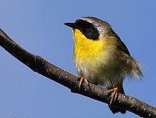
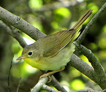
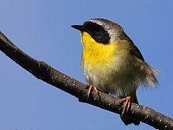
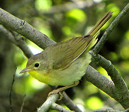

| Common Yellowthroat | |
|---|---|
|  | |
| Male | |
|  | |
| Female | |
| Conservation status | |
| Binomial name | |
| Geothlypis trichas (Linnaeus, 1766) |
| Common Yellowthroat | |
|---|---|
|  | |
| Male | |
|  | |
| Female | |
| Conservation status | |
| Binomial name | |
| Geothlypis trichas (Linnaeus, 1766) |
The Common Yellowthroat (Geothlypis trichas) is a New World warbler. They are abundant breeders in North America, ranging from southern Canada to central Mexico. Northern races are migratory, wintering in the southern parts of the breeding range, Central America and the West Indies. Southern forms are largely resident. This species is a very rare vagrant to western Europe.
Common Yellowthroats are small songbirds that have olive backs, wings and tails, yellow throats and chests, and white bellies. Adult males have black face masks which stretch from the sides of the neck across the eyes and forehead, which are bordered above with white or gray. Females are similar in appearance, but have paler underparts and lack the black mask. Immature birds are similar in appearance to the adult female. First-year males have a faint black mask which darkens completely by spring.[2]
There are 13 races of this bird. These races differ mainly in the males' facial patterns and the brightness of the yellow underparts. The southwestern forms of this bird are the brightest and the yellowest below.[3]
The breeding habitats of these birds are marshes and other wet areas with dense low vegetation, and may also be found in other areas with dense shrub. However, these birds are less common in dry areas. Females appear to prefer males with larger masks. Common Yellowthroats nest in low areas of the vegetation, laying 3-5 eggs in a cup-shaped nest. Both parents feed the young.
These birds feed on insects, which are usually captured in dense vegetation, but sometimes caught in midair.
The Common Yellowthroat's song is a loud twichety twichety twichety twich. Its call is a soft jip.
Despite a decline in numbers in some areas, which is due to loss of favoured habitat, this species is still very common.

{kind=link}
{kind=link}